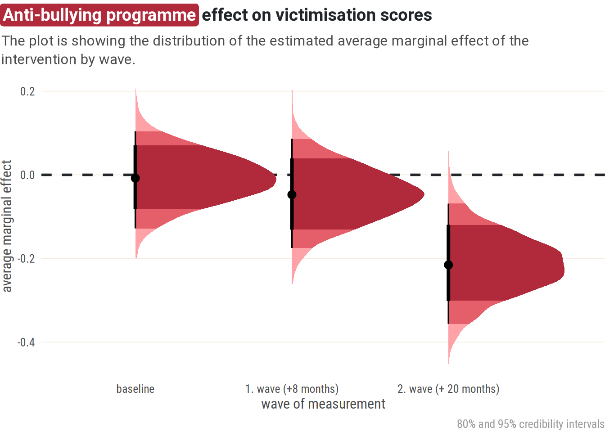
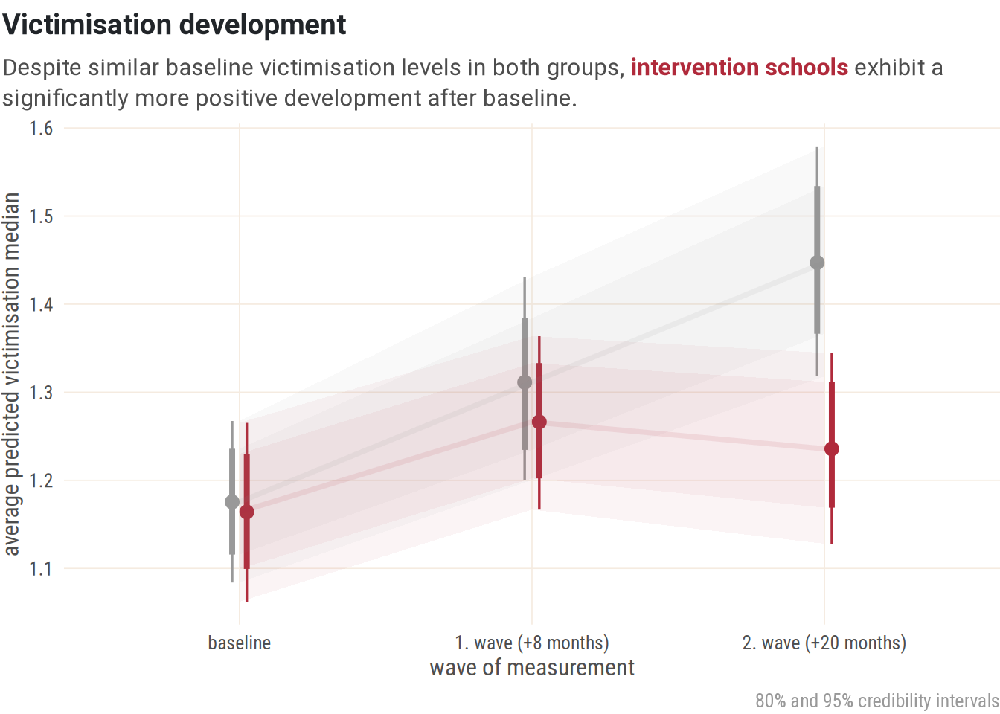
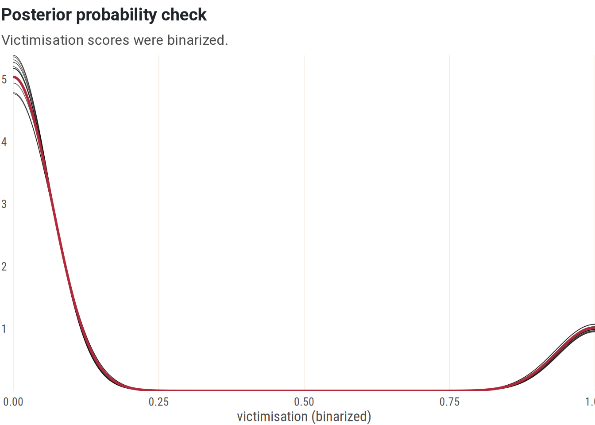

Anti-bullying programme evaluation
Introduction
This is a showcase analysis of an anti-bullying programme using simulated data based on real-world data patterns. The main variable of interest is self-reported bullying victimisation by pupils, as measured by the Florence Bullying-Victimisation Scales (Palladino, Nocentini, and Menesini 2015). The victimisation subscale used here consists of 10 items covering various physical, verbal and covert (e.g. social exclusion) forms of bullying/victimisation.
The data provides answers to the victimisation items by pupils from intervention schools (with anti-bullying programme) and control schools (no anti-bullying programme) across three time points – baseline, first wave (after approx. 8 months) and second wave (approx. a year and 8 months after baseline). Each school, class and pupil (if they took part in at least two measurements) has a unique id. Regarding sociodemographic variables, there is age and gender (if pupils provided this information).
Descriptives
On every item, most pupils tend to answer that they have never experienced the given victimisation form.
As one would expect, there are also gender differences in how pupils answer these items. Boys reported experiencing physical bullying more often than girls, girls reported that rumours have been spread about them more often than boys.
IRT
Using Item Response Theory, we can estimate victimisation as a latent variable. This way, we obtain a Z-score. In the process, we can make sure that all the victimisation variables correlate positively with each other.
Modelling
As can be seen on the density plots above, victimisation generally tends to be zero-inflated, and is thus best captured by zero-inflated or hurdle models. Among those who are bullied, severity of victimisation follows a roughly normal distribution. This calls for a a custom hurdle-gaussian model adopted from Heiss (2022), which accounts for both parts: the hurdle part – whether a pupil experiences any bullying at all, and a gaussian part – for pupils who do experience bullying, what is the severity.
We can define a hierarchical model where students are nested within classes, and classes are nested within schools, while controling for age and gender. The primary focus is the interaction effect of group (intervention vs. control) and wave.
Code
if (file.exists(here(models_dir, "vic_model_hurdle_gaus.rds")) &
params$run_models_again == FALSE) {
vic_model_hurdle_gaus <- read_rds(here(models_dir, "vic_model_hurdle_gaus.rds"))
} else {
vic_model_hurdle_gaus <- brm(
formula = bf(
vic_shifted ~ gender + age +
exp_group * wave +
(1 | school_id / class_group / pupil_id),
hu ~ gender + age + exp_group * wave +
(1 | school_id)
),
control = list(adapt_delta = 0.99),
family = hurdle_gaussian,
prior = c(
# gaussian mean (mu)
set_prior("normal(1.5, 0.5)", class = "Intercept", dpar = "mu"),
# gaussian SD (sigma)
set_prior("normal(0.5, 0.1)", class = "sigma"),
# coefficients
set_prior("normal(0, 1)", class = "b")
),
stanvars = stanvars,
iter = iter,
chains = chains,
warmup = warmup,
seed = bayes_seed,
backend = "cmdstanr",
threads = threading(2),
data = d_mirt
)
write_rds(vic_model_hurdle_gaus, here(models_dir, "vic_model_hurdle_gaus.rds"))
}Code
group_contrasts_by_wave <- avg_comparisons(vic_model_hurdle_gaus,
type = "prediction",
variables = "exp_group", by = "wave",
allow_new_levels = TRUE
)
pd_group_contrasts_by_wave <- group_contrasts_by_wave |>
posterior_draws()
contrasts_table <- pd_group_contrasts_by_wave |>
mutate(wave = factor(wave, levels = c("baseline", "wave_1", "wave_2"),
labels = c("baseline", "1. wave (+8 months)",
"2. wave (+20 months)"))) |>
group_by(wave) |>
summarise(median_hdi(draw)) |>
select(wave:ymax)
contrasts_table |>
kable(caption = "Anti-bullying programme effect on victimisation scores",
col.names = c("wave of measurement", "estimate", "lower", "upper"),
digits = 2) |>
kable_styling() |>
footnote(general = "95 % credibility intervals", threeparttable = TRUE)| wave of measurement | estimate | lower | upper |
|---|---|---|---|
| baseline | -0.01 | -0.12 | 0.11 |
| 1. wave (+8 months) | -0.05 | -0.17 | 0.09 |
| 2. wave (+20 months) | -0.21 | -0.35 | -0.08 |
| Note: | |||
| 95 % credibility intervals |
Based on the fitted model, we can estimate that after 20 months of programme implementation, pupils in intervention schools will, on average, exhibit victimisation scores lower by approx. -0.2 in comparison to control schools. Reported victimisation increases for both groups between the first two waves, most likely due to the timing of the measurement (beginning vs. end of the school year).

We can also visualize this difference by plotting both groups’ development over time.

But what exactly does this difference mean in practical terms? We can binarize the victimisation score based on a cut-off, that will determine where we draw the line to label a pupil as being victimised. One such (arbitrary) cut-off we could look at is 1, meaning we treat pupils with victimisation scores above 1 standard deviation as being victimised. Then we can fit a binomial model.
Code
d_mirt <- d_mirt |>
mutate(vic_bin = ifelse(vic > 1, 1, 0))
if (file.exists(here(models_dir, "vic_model_bin1sd.rds")) &
params$run_models_again == FALSE) {
vic_model_bin1sd <- read_rds(here(
models_dir, "vic_model_bin1sd.rds"))
} else {
vic_model_bin1sd <- brm(
family = bernoulli,
formula = bf(
vic_bin ~
gender + age + exp_group * wave +
(1 | school_id / class_group / pupil_id)
),
data = d_mirt,
iter = iter,
chains = chains,
seed = bayes_seed,
warmup = warmup
)
write_rds(vic_model_bin1sd, here(
models_dir, "vic_model_bin1sd.rds"))
}
The trend is similar to the hurdle-gaussian model and shows a notably lower prevalence of victimisation in intervention schools after 20 months from baseline.
Based on the model, after 20 months of programme implementation, we would expect (with a 95 % probability) intervention schools to have victimisation lower by 3.1 pp.–13.3 pp. in comparison to control schools.
Used packages
- Arel-Bundock V, Greifer N, Heiss A (2024). “How to Interpret Statistical Models Using marginaleffects for R and Python.” Journal of Statistical Software, 111(9), 1-32. doi:10.18637/jss.v111.i09 https://doi.org/10.18637/jss.v111.i09.
- Bouchal P, Netík J (2025). reschola: The Schola Empirica Package. R package version 0.5.6.9000, commit 3633342c1e4693059e3c8d18c40b98172088167b, https://github.com/scholaempirica/reschola.
- Bürkner P (2017). “brms: An R Package for Bayesian Multilevel Models Using Stan.” Journal of Statistical Software, 80(1), 1-28. doi:10.18637/jss.v080.i01 https://doi.org/10.18637/jss.v080.i01. Bürkner P (2018). “Advanced Bayesian Multilevel Modeling with the R Package brms.” The R Journal, 10(1), 395-411. doi:10.32614/RJ-2018-017 https://doi.org/10.32614/RJ-2018-017. Bürkner P (2021). “Bayesian Item Response Modeling in R with brms and Stan.” Journal of Statistical Software, 100(5), 1-54. doi:10.18637/jss.v100.i05 https://doi.org/10.18637/jss.v100.i05.
- Chalmers RP (2012). “mirt: A Multidimensional Item Response Theory Package for the R Environment.” Journal of Statistical Software, 48(6), 1-29. doi:10.18637/jss.v048.i06 https://doi.org/10.18637/jss.v048.i06.
- Eddelbuettel D, Francois R, Allaire J, Ushey K, Kou Q, Russell N, Ucar I, Bates D, Chambers J (2025). Rcpp: Seamless R and C++ Integration. doi:10.32614/CRAN.package.Rcpp https://doi.org/10.32614/CRAN.package.Rcpp, R package version 1.1.0, https://CRAN.R-project.org/package=Rcpp. Eddelbuettel D, François R (2011). “Rcpp: Seamless R and C++ Integration.” Journal of Statistical Software, 40(8), 1-18. doi:10.18637/jss.v040.i08 https://doi.org/10.18637/jss.v040.i08. Eddelbuettel D (2013). Seamless R and C++ Integration with Rcpp. Springer, New York. doi:10.1007/978-1-4614-6868-4 https://doi.org/10.1007/978-1-4614-6868-4, ISBN 978-1-4614-6867-7. Eddelbuettel D, Balamuta J (2018). “Extending R with C++: A Brief Introduction to Rcpp.” The American Statistician, 72(1), 28-36. doi:10.1080/00031305.2017.1375990 https://doi.org/10.1080/00031305.2017.1375990.
- FC M, Davis T, ggplot2 authors (2025). ggpattern: ‘ggplot2’ Pattern Geoms. doi:10.32614/CRAN.package.ggpattern https://doi.org/10.32614/CRAN.package.ggpattern, R package version 1.1.4, https://CRAN.R-project.org/package=ggpattern.
- Grolemund G, Wickham H (2011). “Dates and Times Made Easy with lubridate.” Journal of Statistical Software, 40(3), 1-25. https://www.jstatsoft.org/v40/i03/.
- Hester J, Bryan J (2024). glue: Interpreted String Literals. doi:10.32614/CRAN.package.glue https://doi.org/10.32614/CRAN.package.glue, R package version 1.8.0, https://CRAN.R-project.org/package=glue.
- Kay M (2024). tidybayes: Tidy Data and Geoms for Bayesian Models. doi:10.5281/zenodo.1308151 https://doi.org/10.5281/zenodo.1308151, R package version 3.0.7, http://mjskay.github.io/tidybayes/.
- Makowski D, Lüdecke D, Patil I, Thériault R, Ben-Shachar M, Wiernik B (2023). “Automated Results Reporting as a Practical Tool to Improve Reproducibility and Methodological Best Practices Adoption.” CRAN. https://easystats.github.io/report/.
- Müller K (2020). here: A Simpler Way to Find Your Files. doi:10.32614/CRAN.package.here https://doi.org/10.32614/CRAN.package.here, R package version 1.0.1, https://CRAN.R-project.org/package=here.
- Müller K, Wickham H (2025). tibble: Simple Data Frames. doi:10.32614/CRAN.package.tibble https://doi.org/10.32614/CRAN.package.tibble, R package version 3.3.0, https://CRAN.R-project.org/package=tibble.
- Pedersen T (2025). patchwork: The Composer of Plots. doi:10.32614/CRAN.package.patchwork https://doi.org/10.32614/CRAN.package.patchwork, R package version 1.3.1, https://CRAN.R-project.org/package=patchwork.
- Pedersen T, Mitáš M (2025). marquee: Markdown Parser and Renderer for R Graphics. doi:10.32614/CRAN.package.marquee https://doi.org/10.32614/CRAN.package.marquee, R package version 1.0.0, https://CRAN.R-project.org/package=marquee.
- R Core Team (2025). R: A Language and Environment for Statistical Computing. R Foundation for Statistical Computing, Vienna, Austria. https://www.R-project.org/.
- Sarkar D (2008). Lattice: Multivariate Data Visualization with R. Springer, New York. ISBN 978-0-387-75968-5, http://lmdvr.r-forge.r-project.org.
- Wickham H (2016). ggplot2: Elegant Graphics for Data Analysis. Springer-Verlag New York. ISBN 978-3-319-24277-4, https://ggplot2.tidyverse.org.
- Wickham H (2023). forcats: Tools for Working with Categorical Variables (Factors). doi:10.32614/CRAN.package.forcats https://doi.org/10.32614/CRAN.package.forcats, R package version 1.0.0, https://CRAN.R-project.org/package=forcats.
- Wickham H (2023). stringr: Simple, Consistent Wrappers for Common String Operations. doi:10.32614/CRAN.package.stringr https://doi.org/10.32614/CRAN.package.stringr, R package version 1.5.1, https://CRAN.R-project.org/package=stringr.
- Wickham H, Averick M, Bryan J, Chang W, McGowan LD, François R, Grolemund G, Hayes A, Henry L, Hester J, Kuhn M, Pedersen TL, Miller E, Bache SM, Müller K, Ooms J, Robinson D, Seidel DP, Spinu V, Takahashi K, Vaughan D, Wilke C, Woo K, Yutani H (2019). “Welcome to the tidyverse.” Journal of Open Source Software, 4(43), 1686. doi:10.21105/joss.01686 https://doi.org/10.21105/joss.01686.
- Wickham H, François R, Henry L, Müller K, Vaughan D (2023). dplyr: A Grammar of Data Manipulation. doi:10.32614/CRAN.package.dplyr https://doi.org/10.32614/CRAN.package.dplyr, R package version 1.1.4, https://CRAN.R-project.org/package=dplyr.
- Wickham H, Henry L (2025). purrr: Functional Programming Tools. doi:10.32614/CRAN.package.purrr https://doi.org/10.32614/CRAN.package.purrr, R package version 1.1.0, https://CRAN.R-project.org/package=purrr.
- Wickham H, Hester J, Bryan J (2024). readr: Read Rectangular Text Data. doi:10.32614/CRAN.package.readr https://doi.org/10.32614/CRAN.package.readr, R package version 2.1.5, https://CRAN.R-project.org/package=readr.
- Wickham H, Vaughan D, Girlich M (2024). tidyr: Tidy Messy Data. doi:10.32614/CRAN.package.tidyr https://doi.org/10.32614/CRAN.package.tidyr, R package version 1.3.1, https://CRAN.R-project.org/package=tidyr.
- Xie Y (2025). knitr: A General-Purpose Package for Dynamic Report Generation in R. R package version 1.50, https://yihui.org/knitr/. Xie Y (2015). Dynamic Documents with R and knitr, 2nd edition. Chapman and Hall/CRC, Boca Raton, Florida. ISBN 978-1498716963, https://yihui.org/knitr/. Xie Y (2014). “knitr: A Comprehensive Tool for Reproducible Research in R.” In Stodden V, Leisch F, Peng RD (eds.), Implementing Reproducible Computational Research. Chapman and Hall/CRC. ISBN 978-1466561595.
- Zhu H (2024). kableExtra: Construct Complex Table with ‘kable’ and Pipe Syntax. doi:10.32614/CRAN.package.kableExtra https://doi.org/10.32614/CRAN.package.kableExtra, R package version 1.4.0, https://CRAN.R-project.org/package=kableExtra.